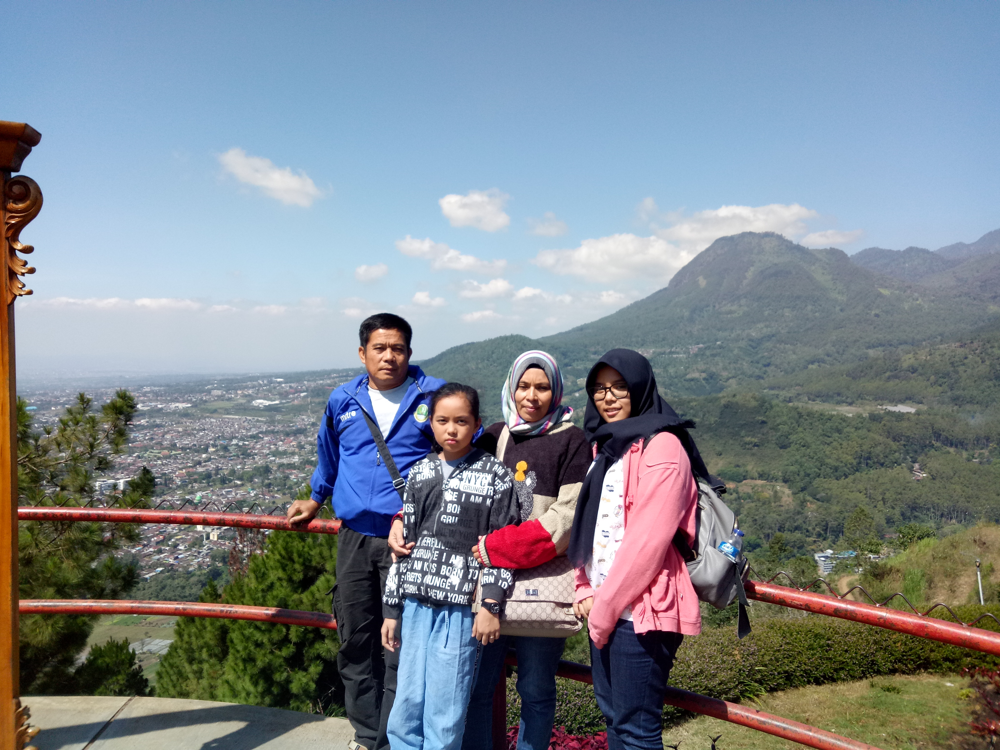
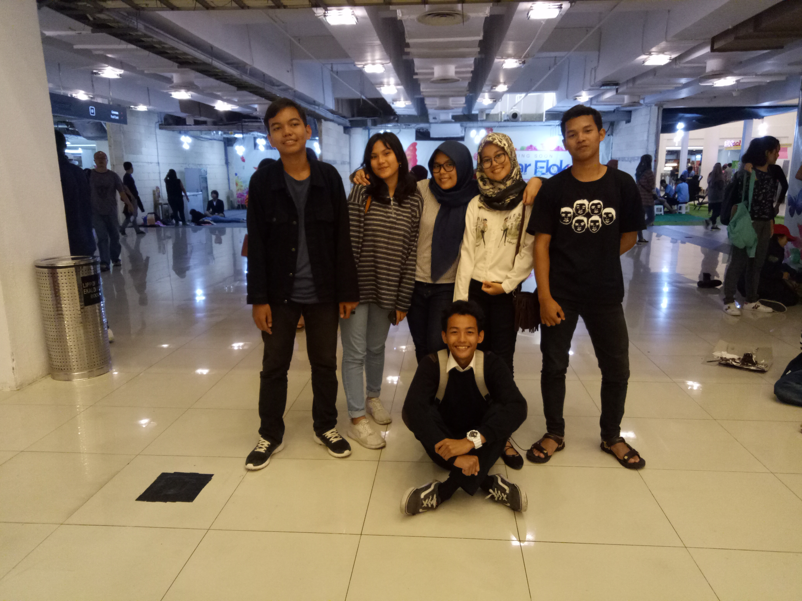
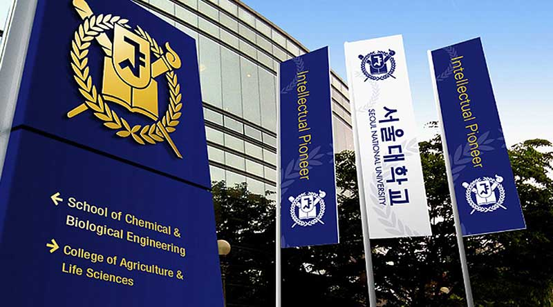
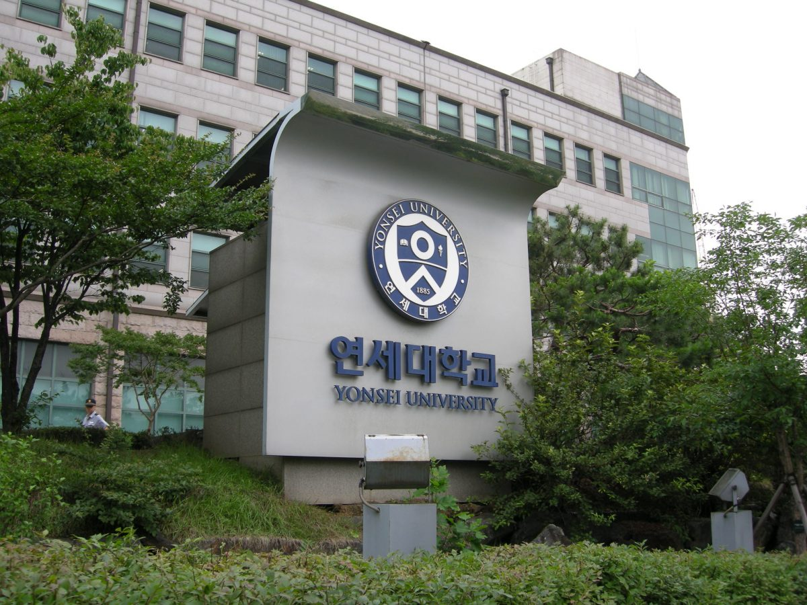

Assalamualaikum Wr. Wb.
Hi Everybody!
Perkenalkan namaku Fanny Raniah Nuraeni, biasa dipanggil Fanny. Aku adalah seorang pelajar di SMK-SMAK Bogor dan sedang berada di kelas 11. Aku lahir dan tinggal di Kota Hujan tercinta, Bogor. Aku lahir di Bogor tanggal 26 April 2002.

KELUARGA
Di keluarga kecilku, aku adalah anak pertama dari dua bersaudara. Aku punya satu adik perempuan yang sekarang ini berada di kelas 5 SD. Aku lebih sering bertengkar dengan adikku dibanding bermain dengannya. Hal yang membuatku tidak menyukai adikku adalah karena salah satu sifatnya. Ia selalu saja menjengkelkan jika sedang diberi nasihat oleh ibuku atau pun denganku. Dia adalah tipe orang yang tidak mau mendengarkan nasihat orang lain. Namun, bagaimanapun juga aku tidak bisa menyangkal bahwa dia tetaplah adikku. Aku orang asli Sunda. Ayah dan Ibu ku berasal dari lingkungan yang sama, maka dari itu aku benar benar orang asli Bogor. Oleh karena itu, saat Hari Raya tiba aku tidak pernah pergi untuk pulang kampung, karena aku sudah tinggal di kampung halaman.
Berikut ini adalah foto aku dan keluarga kecilku.

TEMAN-TEMAN
Sebenarnya ada banyak teman-temanku yang sudah kuanggap sebagai keluarga. Namun, yang teringat olehku saat ini adalah teman-temanku saat di SMP dulu. Aku teringat mereka karena sekarang kita semua bersekolah di sekolah yang berbeda dan kita jarang sekali bisa meluangkan waktu bersama-sama karena perbedaan jadwal kita. Walaupun kita jarang bertemu, kita masih sering chat di grup atau hangout walaupun tidak pernah fullteam. Kenangan kita saat SMP masih teringat jelas hingga sekarang.
Ini adalah foto aku dan teman-teman dekat SMP ku sewaktu kita hangout bersama walaupun tidak fullteam. Seharusnya kami berdelapan.

Impianku adalah aku ingin bisa berkuliah di Universitas Nasional Seoul atau di Universitas Yonsei


Wassalamualaikum Wr. Wb.